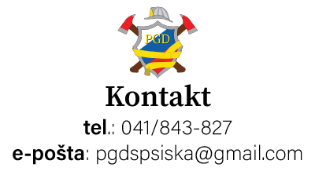

DONACIJE
Vsak od vas lahko pomaga k razvoju gasilstva v Spodnji Šiški. Mi imamo
voljo in željo pomagati a potrebujemo tudi sodobno opremo, ki jo je
potrebno vzdrževati in (ob dotrajanosti) zamenjati.
Pomagate nam lahko na dva načina:
- 1. Lahko nam namenite del Vaše dohodnine (kar Vas popolnoma nič ne stane). Navodila za ta korak najdete na tej povezavi..
- 2. Z neposredno donacijo našemu društvu. Slednje se lahko opravi na dva načina:
- - Plačilo z pomočjo QR kode ali
- - preko UPN obrazca. Ta mora vsebovati naslednje:
- * Kodo namena: CHAR (dobrodelno plačilo),
- * namen plačila,
- * IBAN (SI56 6100 0001 4126 748),
- * referenco (SI99) ter
- * ime, ulico in kraj prejemnika (PGD Spodnja Šiška, Verovškova 4 in 1000 Ljubljana).
